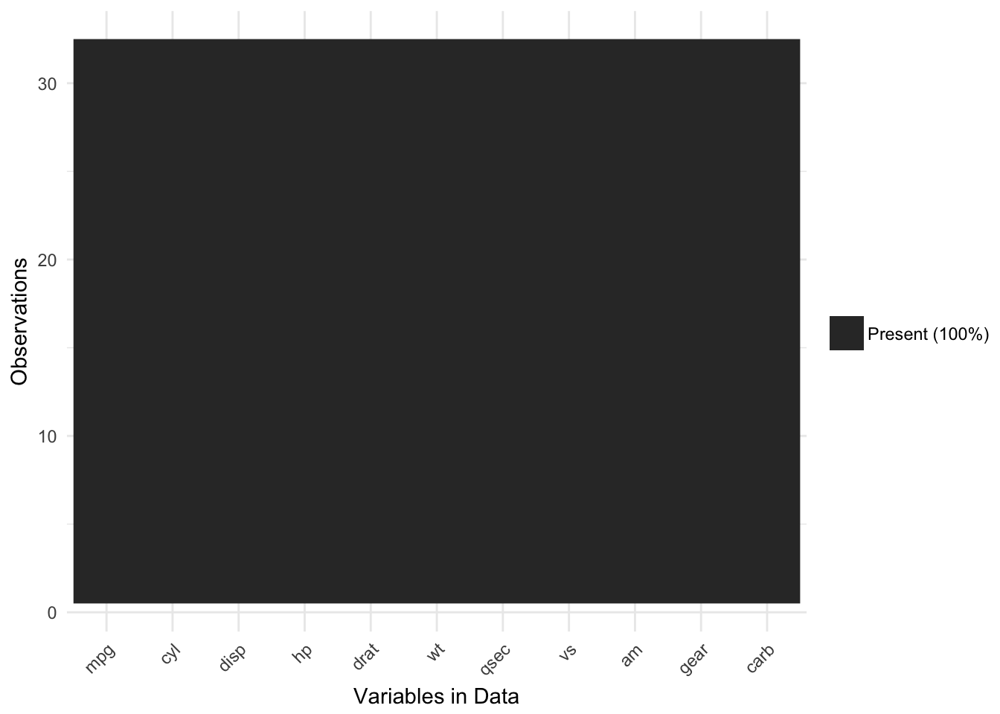
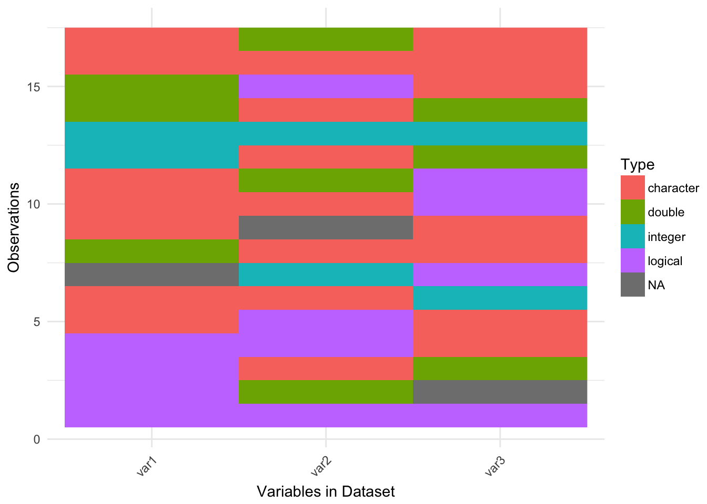
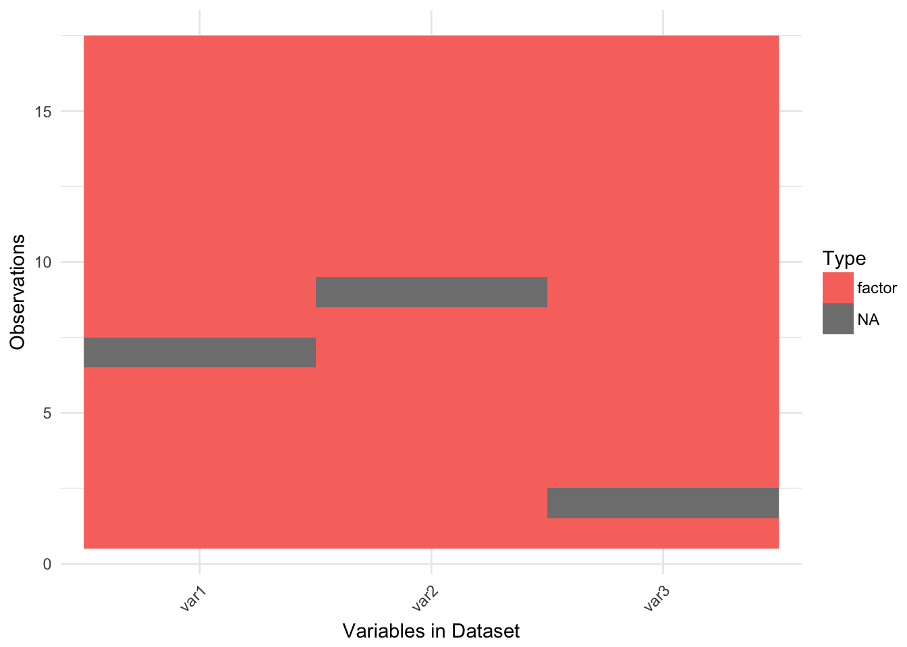

Using visdat
Nicholas Tierney
2016-11-05
What does visdat do?
Initially inspired by csv-fingerprint, vis_dat helps visualise a dataframe in a heatmap-like fashion, allowing you to “get a look at the data”, by displaying the variable classes in a dataframe as a plot with vis_dat, and getting a brief look into missing data patterns vis_miss.
There have been 6 phases of data science 1 described, being:
image from this datascience page with reference
Where Wickham describes that you can get insight into your data by modelling, visualising, and transforming, which he describes as “Understanding” or “knowledge generation”. There is some overlap here, as in this process it wouldn’t be surprising that you might uncover some feature of your dataset that you would need to clean up - you might discover that some strings were indeed factors, or that gender was considered numeric in your regression, warranting you to re-visit the Tidying phase.
In the same way, I think that this process gets applied in the Tidying step of data science. You read in your data, but you then need to look at it to understand what you need to do to “fix it”. And that’s a key phrase here “looking at the data” - what does that mean?
On one hand, you can look at the head of the data:
head(iris)## Sepal.Length Sepal.Width Petal.Length Petal.Width Species
## 1 5.1 3.5 1.4 0.2 setosa
## 2 4.9 3.0 1.4 0.2 setosa
## 3 4.7 3.2 1.3 0.2 setosa
## 4 4.6 3.1 1.5 0.2 setosa
## 5 5.0 3.6 1.4 0.2 setosa
## 6 5.4 3.9 1.7 0.4 setosaOr you can have a glimpse at it through tibble/dplyr
tibble::glimpse(iris)## Observations: 150
## Variables: 5
## $ Sepal.Length <dbl> 5.1, 4.9, 4.7, 4.6, 5.0, 5.4, 4.6, 5.0, 4.4, 4.9,...
## $ Sepal.Width <dbl> 3.5, 3.0, 3.2, 3.1, 3.6, 3.9, 3.4, 3.4, 2.9, 3.1,...
## $ Petal.Length <dbl> 1.4, 1.4, 1.3, 1.5, 1.4, 1.7, 1.4, 1.5, 1.4, 1.5,...
## $ Petal.Width <dbl> 0.2, 0.2, 0.2, 0.2, 0.2, 0.4, 0.3, 0.2, 0.2, 0.1,...
## $ Species <fctr> setosa, setosa, setosa, setosa, setosa, setosa, ...And we can see we have doubles, and a factor. And we get a little insight into the data.
But we don’t always have data like iris, let’s take a look at some data that might be a bit more typical of “messy” data.
library(visdat)
dplyr::glimpse(typical_data)## Observations: 5,000
## Variables: 9
## $ ID <chr> "0001", "0002", "0003", "0004", "0005", NA, "0007",...
## $ Race <fctr> White, Hispanic, White, Black, White, Hispanic, Hi...
## $ Age <int> 34, 25, 35, NA, NA, NA, 26, 31, 20, 26, NA, NA, 21,...
## $ Sex <fctr> Female, Male, Male, Female, Male, Male, Male, Fema...
## $ Height(cm) <dbl> 181.6, 174.3, 171.9, 188.4, 171.1, 179.5, 175.8, 17...
## $ IQ <dbl> 100, 100, 104, 116, 106, 105, 95, 98, 88, NA, 96, 1...
## $ Smokes <lgl> FALSE, FALSE, FALSE, FALSE, FALSE, FALSE, TRUE, FAL...
## $ Income <dbl> 33873.82, 38799.39, 7235.28, 29629.44, 19990.00, 69...
## $ Died <lgl> TRUE, TRUE, FALSE, TRUE, TRUE, FALSE, FALSE, TRUE, ...And you might then ask:
Isn’t it odd that Income is afactor? And Age is a character?
The name visdat was chosen as it borrows from the idea of testdat, which provides unit testing for your data. In a similar way, visdat provides visual tests for The idea being that first you visualise your data (visdat), then you run tests from testdat to fix them.
There are currently three main commands: vis_dat, vis_miss, and vis_guess
vis_datvisualises a dataframe showing you what the classes of the columns are, and also displaying the missing data.vis_missvisualises just the missing data, and allows for missingness to be clustered and columns rearranged.vis_missis similar tomissing.pattern.plotfrom themipackage. Unfortunatelymissing.pattern.plotis no longer in themipackage (well, as of 14/02/2016).vis_guesshas a guess at what the value of each cell. So “10.1” will return “double”, and10.1will return “double”, and01/01/01will return “date”. Keep in mind that it is a guess at what each cell is, so you can’t trust this fully.vis_guessis made possible thanks to Hadley Wickham’sreadrpackage - thanks mate!
Examples
Using vis_dat
Let’s see what’s inside the dataset airquality
library(visdat)
vis_dat(airquality)
The classes are represented on the legend, and missing data represented by grey.
by default, vis_dat sorts the columns according to the type of the data in the vectors. You can turn this off by setting sort_type == FALSE. This feature is better illustrated using the typical_data dataset, created using wakefield and contained within visdat
vis_dat(typical_data)## Warning: attributes are not identical across measure variables; they will
## be dropped
vis_dat(typical_data,
sort_type = FALSE)## Warning: attributes are not identical across measure variables; they will
## be dropped
The plot above tells us that R reads this dataset as having numeric and integer values, along with some missing data in Ozone and Solar.R.
using vis_miss
We can explore the missing data further using vis_miss
vis_miss(airquality)
The percentages of missing/complete in vis_miss are accurate to 1 decimal place.
You can cluster the missingness by setting cluster = TRUE
vis_miss(airquality,
cluster = TRUE)
The columns can also just be arranged by columns with most missingness, by setting sort_miss = TRUE.
vis_miss(airquality,
sort_miss = TRUE)
When there is <0.1% of missingness, vis_miss indicates that there is >1% missingness.
test_miss_df <- data.frame(x1 = 1:10000,
x2 = rep("A", 10000),
x3 = c(rep(1L, 9999), NA))
vis_miss(test_miss_df)## Warning: attributes are not identical across measure variables; they will
## be dropped
vis_miss will also indicate when there is no missing data at all
vis_miss(mtcars)
using vis_guess
vis_guess takes a guess at what each cell is. It’s best illustrated using some messy data, which we’ll make here.
messy_vector <- c(TRUE,
T,
"TRUE",
"T",
"01/01/01",
"01/01/2001",
NA,
NaN,
"NA",
"Na",
"na",
"10",
10,
"10.1",
10.1,
"abc",
"$%TG")
messy_df <- data.frame(var1 = messy_vector,
var2 = sample(messy_vector),
var3 = sample(messy_vector))vis_guess(messy_df)
So here we see that there are many different kinds of data in your dataframe. As an analyst this might be a depressing finding. Compare this to vis_dat.
vis_dat(messy_df)
Where you’d just assume your data is wierd because it’s all factors - or worse, not notice that this is a problem.
At the moment vis_guess is very slow. Please take this into consideration when you are using it on data with more than 1000 rows. We’re looking into ways of making it faster, potentially using methods from the parallel package, or extending the c++ code from readr:::collectorGuess.
Interactivity
Thanks to Carson Sievert, you can now add some really nifty interactivity into visdat by using plotly::ggplotly, allowing for information to be revealed upon mouseover of a cell. The code to do this can be seen below, but is not shown as the github README doesn’t support HTML interactive graphics…yet.
library(plotly)
vis_dat(airquality) %>% ggplotly()